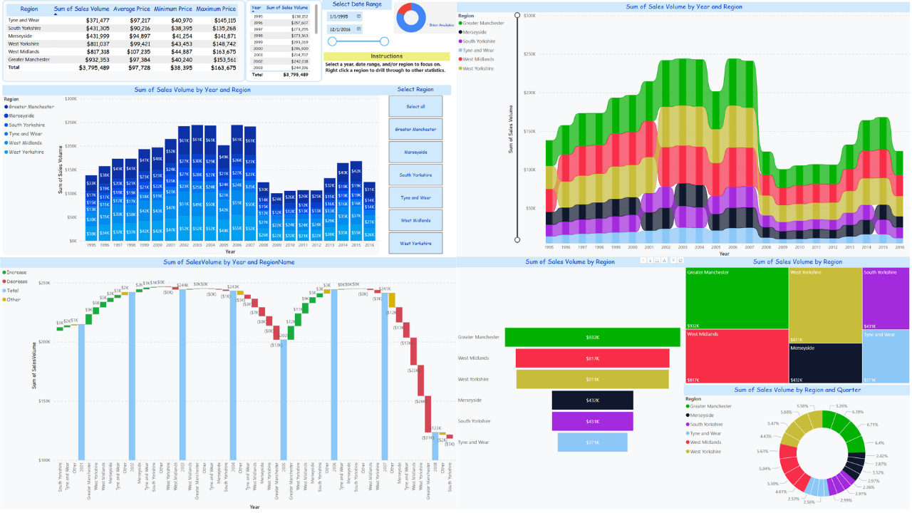
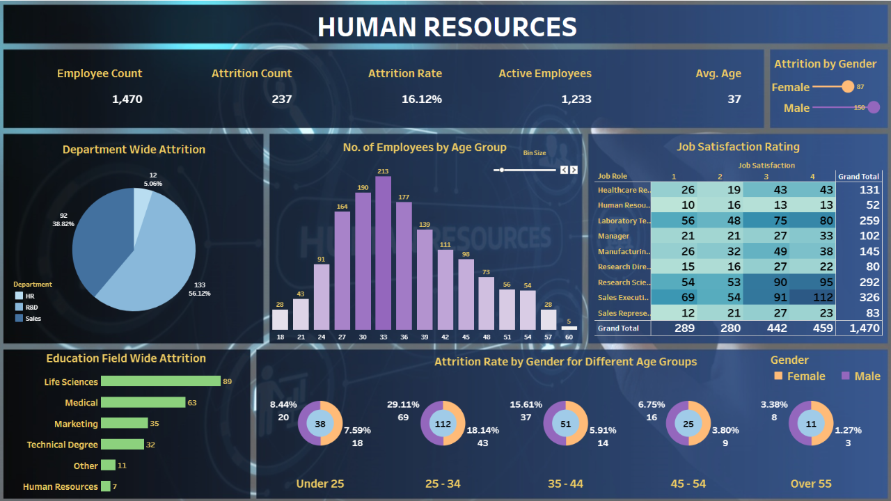
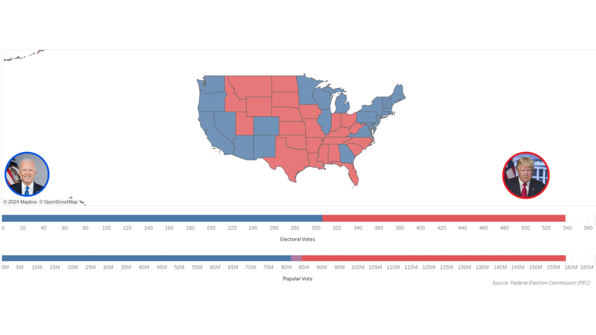
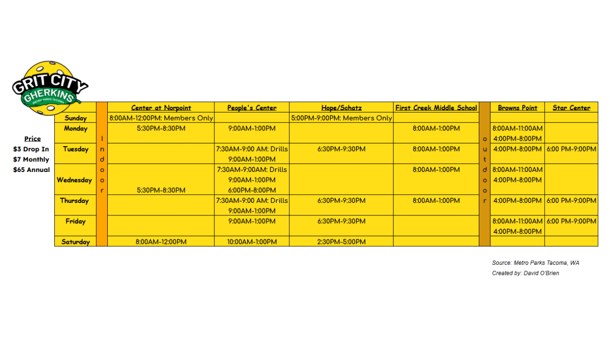
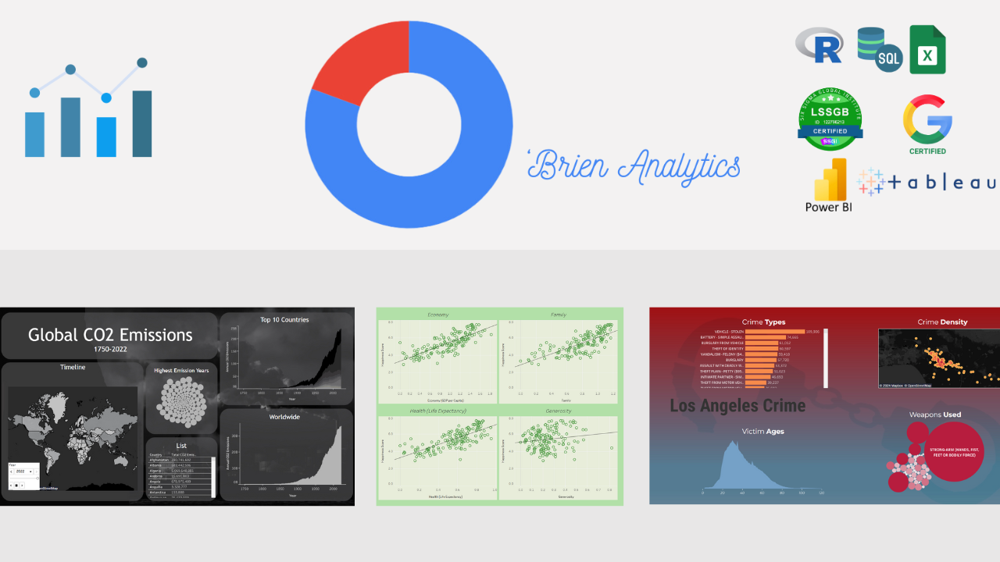

In depth financial analysis of housing prices across 6 regions of the United Kingdom, investigating 4 different housing types (Flats, and Detached, Terraced and Semidetached units). Utilizes Microsoft Power BI, DAX, and M. Includes drillthroughs and drill downs, a vast array of chart types, and bookmarks. Each page is able to be cross-filtered and/or cross-highlighted to discover your own actionable insights.


Comprehensive analysis of user behavior for a fictional bike-share company, Cyclistic, to inform business decisions and increase subscriber memberships. Leveraged SQL, R, and Tableau to clean and analyze over 300,000 records, uncovering key insights about user types, demographics, and peak usage patterns. Delivered actionable recommendations, including targeted subscription packages and marketing strategies, supported by advanced data visualizations and geospatial analysis.

Utilizing interactive Tableau dashboard features, businesses can gain a better understanding of their business analytics such as attrition rates, employee education, and age and gender discrepancies!

In-depth analysis of the 2020 U.S. presidential election results, using data from the Federal Election Commission (FEC). Explored voting patterns across all 50 states, utilizing Tableau with spatial data. Highlights include comparative maps for advanced analysis and interesting descriptive insights. Delivered actionable visualizations to enhance understanding of election dynamics and outcomes.

Restructured scattered information from Metro Parks Tacoma Gherkin's Pickleball scheduling website into a uniform, aesthetically pleasing graphic using Excel. The visualization integrated key details such as pricing, times, and locations, and differentiated between indoor and outdoor courts. This cohesive schedule improves accessibility and user experience by providing clear and organized information at a glance.
An in depth SQL analysis of correctional facilities in the United States, including cross comparing suicide rate data. Is there a correlation between general population suicides and the number of correctional facilities a state has? If so, how do mental health and incarceration rates impact eachother? (Optimized for Microsoft SQL Server)

Investigating Global CO2 Emissions, Los Angeles Crime, and World Happiness Data. All of these expertly created through Tableau Public.